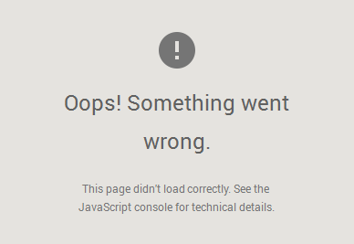

<!-- bootstrap mobile - noPage -->

<div class="container"  id="noPage" style="display: none">
    <div class="row" style="margin-left: 1px; margin-right: 1px; margin-bottom: 13px;">
        
    </div>

</div>
<!-- end: noPage-->

